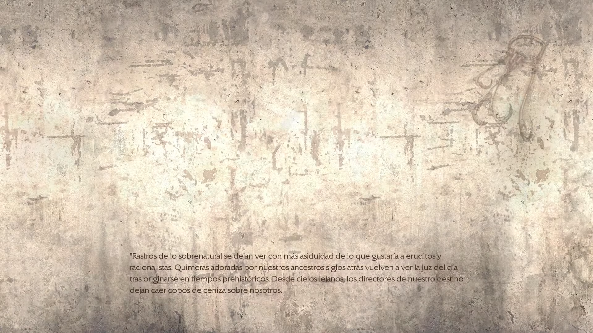
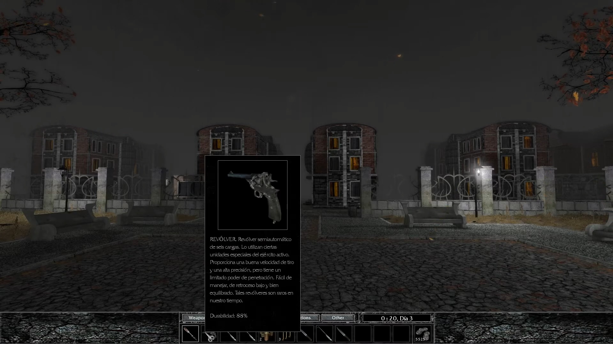
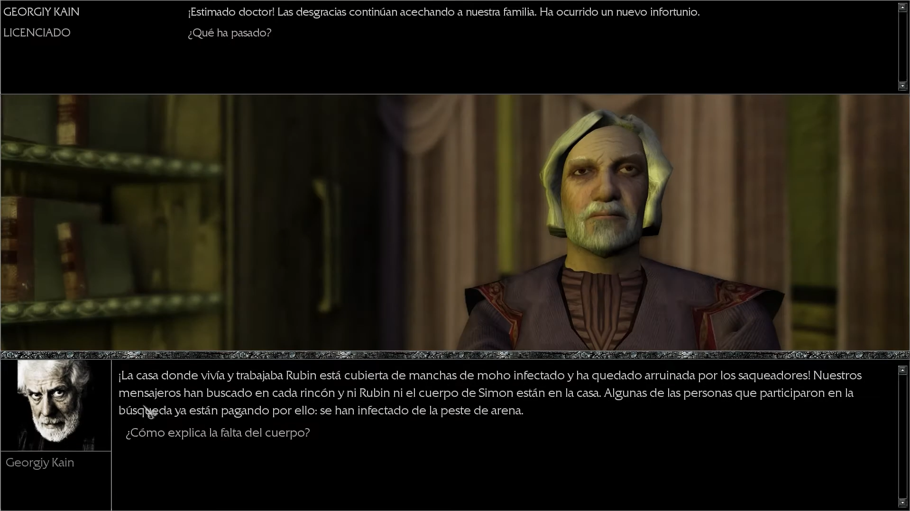

Traduccion al castellano
¡Vuelve el clásico de culto de la desarrolladora Ice-Pick Lodge, esta vez completamente traducido al castellano! Tras postularse como uno de los juegos con una narrativa más atractiva del medio, y después de triunfar con su secuela Pathologic Classic HD llega completamente traducido al lenguaje de Cervantes. Una de las principales pegas que tenía este juego tras su lanzamiento era la complejidad para entender su enrevesada trama ya que solo contaba con los idiomas inglés y ruso para jugar. Por fin, y después de casi 10 años desde su publicación, toda persona hispanohablante podrá dejarse envolver por la historia que rodea al pueblo a orillas del Gorkhon.
Lo que hemos traducido:
En este proyecto de traducción en el que nos hemos embarcado hemos querido traducir la mayor cantidad de contenido posible, así como añadir funcionalidades que el juego original no tenía. Un ejemplo de esto es el poder añadir subtítulos tal como ocurre en Pathologic 2, la secuela. Sin embargo, nos encontramos con un escollo: el motor usado para el juego no permite poder implementar subtítulos in-game. Es por eso que, ante algunas escenas habladas en inglés que son relevantes para la trama, y que no teníamos forma de subtitular, hemos decidido doblar al castellano dichas escenas. Podrás encontrarlas en la representaciión que se hace en el Teatro al final de cada día. Por otra parte, el juego contará con traducción al castellano tanto de todos los diálogos del juego, así como la interfaz (mapa, objetos, cartas, intro del juego...)







Porcentaje del proyecto
- Traduccion: 20%
- Correccion: -
- Edicion de graficos: 95%
- Betatesting: 20%